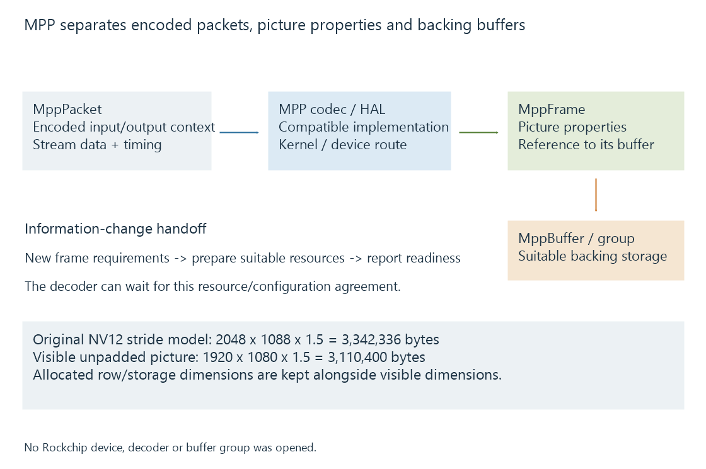

Rockchip Media Process Platform (RKMPP)
Rockchip MPP connects supported codec implementations, buffer management and hardware abstraction to a compatible Rockchip platform and kernel interface.
Rockchip Media Process Platform, commonly called MPP or RKMPP, supplies media software, codec handling and hardware abstraction for supported Rockchip platforms.
The public project connects its media interface and buffer management to codec/parser work, a hardware abstraction layer and the relevant kernel path. It is a distinct application integration from simply finding a V4L2 codec device.
Packets, frames and buffers describe different objects
| Object | Role |
|---|---|
| MppPacket | Encoded-stream input or output context |
| MppFrame | Picture properties and the associated frame result/input |
| MppBuffer | Backing memory/resource representation |
| MppBufferGroup | An arrangement for managing suitable buffers |
Those objects preserve the difference between compressed data and reconstructed pictures. The container's selected stream has to reach the codec with the appropriate packet and timing information.

Hardware support depends on the actual SoC, codec configuration and software stack. A repository listing a SoC does not make every older and newer Rockchip product interchangeable.
Visible dimensions do not define the allocation
Use an original linear 8-bit 4:2:0 picture with visible dimensions 1920 × 1080, horizontal stride 2048 and padded vertical height 1088:
Allocation model = 2048 × 1088 × 1.5 = 3,342,336 bytes
Visible unpadded picture = 1920 × 1080 × 1.5 = 3,110,400 bytes
The first value describes this declared padded layout. It is not a universal MPP allocation formula for tiled, compressed or other pixel formats.
The consumer uses the actual frame's layout and buffer size. Reading every row as 1920 contiguous bytes would ignore the declared padding and misplace later rows.
Information changes require a prepared output context
A decoder can discover or change picture information as it parses the stream. MPP reports the relevant information-change condition so the client can establish suitable output resources.
Rockchip's guide describes allocation modes and, where applicable, an external buffer group. The MPP_DEC_SET_INFO_CHANGE_READY control tells the decoder that the required reset/resource preparation for that condition is ready.
A deliberate wait at this boundary need not mean the hardware stopped understanding the codec. It can mean the client has not yet supplied the output-resource relationship needed to continue.
Release the result after its consumers finish
The client retains picture buffers for downstream display, filtering, reference or encoding use. When those uses end, it returns/releases resources under the configured allocation mode.
A compatible exported/shared-resource route can avoid an application-level copy, while another consumer may require a different layout. DMA-BUF sharing explains the Linux resource boundary.
See Also
- V4L2 memory-to-memory codecs
- DRM PRIME and DMA-BUF frame sharing
- OpenMAX IL components, ports and state
- Hardware frame surfaces and GPU contexts
- Driver-dependent media capabilities